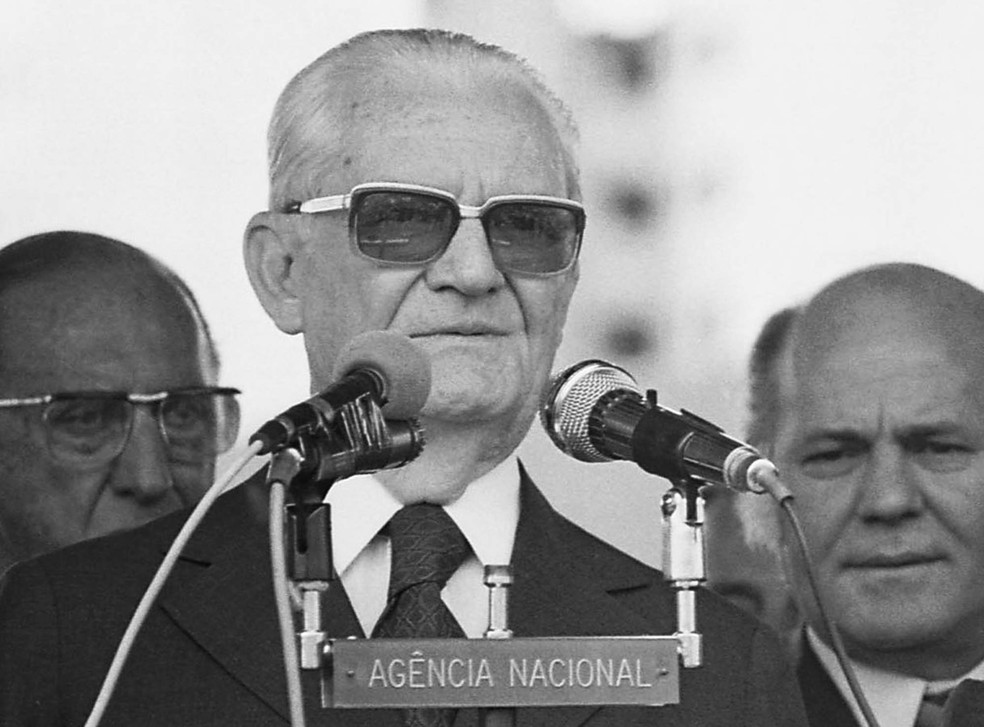

Os dois Governos mais rígidos
1.Emílio Garrastazu Médici
O governo de Médici entrou para a história como um mais repressores do regime militar e foi chamado de "Anos de Chumbo". Seu mandato ficou marcado tanto pelo aumento da repressão como pelo crescimento da economia, fenômeno que foi conhecido como "Milagre Econômico".

2.Ernesto Geisel
O governo de Geisel marcou a transição para o processo democrático tão quanto a entrada do Brasil na política neoliberal. Ele extinguiu o AI-5 e concedeu anistia política a várias pessoas que estavam exiladas em outros países, principalmente artistas e políticos
